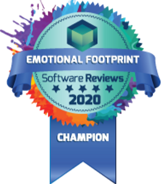

Sakai ranked Number One In customer experience among LMS competitors

May 11, 2020
1 min read
Sakai ranked number one in 23 of 25 areas in a new study by Info-Tech Research Group, an information technology research and advisory company.

LMS customer experience champion, 2020
The study found Sakai LMS to be the only learning management system to “delight” its customers overall, demonstrating altruism, generosity, willingness to put customers’ interests first, friendly negotiation, willingness to include product enhancements at no extra charge, and inspiration.
“We’re pleased that the Sakai community’s values are reflected so clearly in this customer experience study,” said Joshua Wilson, Chair of the Sakai Community Marketing Team and VP/COO of Longsight Inc., Sakai’s leading commercial affiliate. “Sakai is fully open source, and its energetic progress is due to the passion, energy, and generosity of Sakai community members. These results underscore just how much the spirit of sharing and common purpose sustains the Sakai LMS.”
The new study also found that Sakai was the only LMS to reach number-one status with the three most important customer sentiments: Respect, Fairness, and Trustworthiness.
Info-Tech Research Group is the world’s fastest growing information technology research and advisory company, proudly serving over 30,000 IT professionals. They produce relevant research to help CIOs and IT leaders make strategic, timely, and well-informed decisions.